Widen the USB cutout
Make the front opening larger so different USB-C cable ends fit without rubbing.
Prototype 1
Prototype 1 tested the first 3D printed holder shape. The main goal was to check whether the ESP32-C3 Zero could sit securely without blocking the USB port or pins.
Evidence
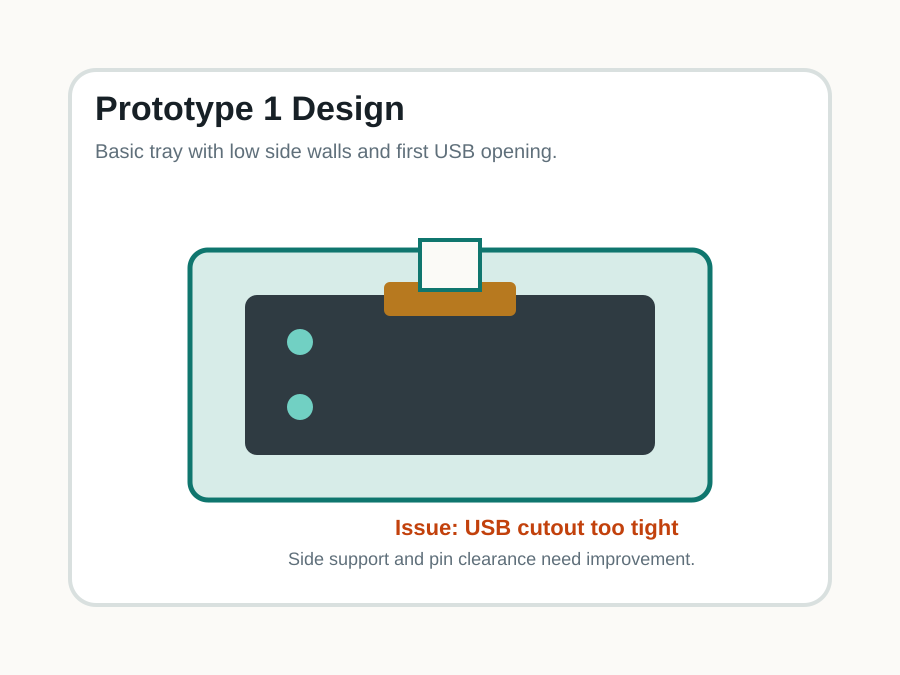
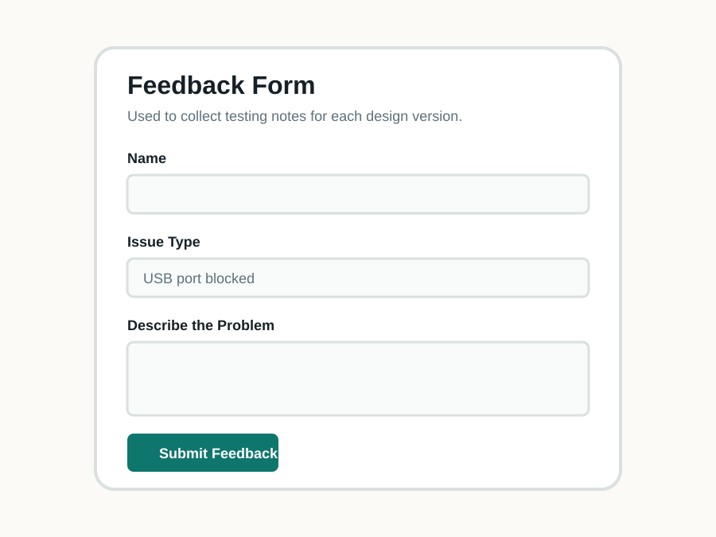
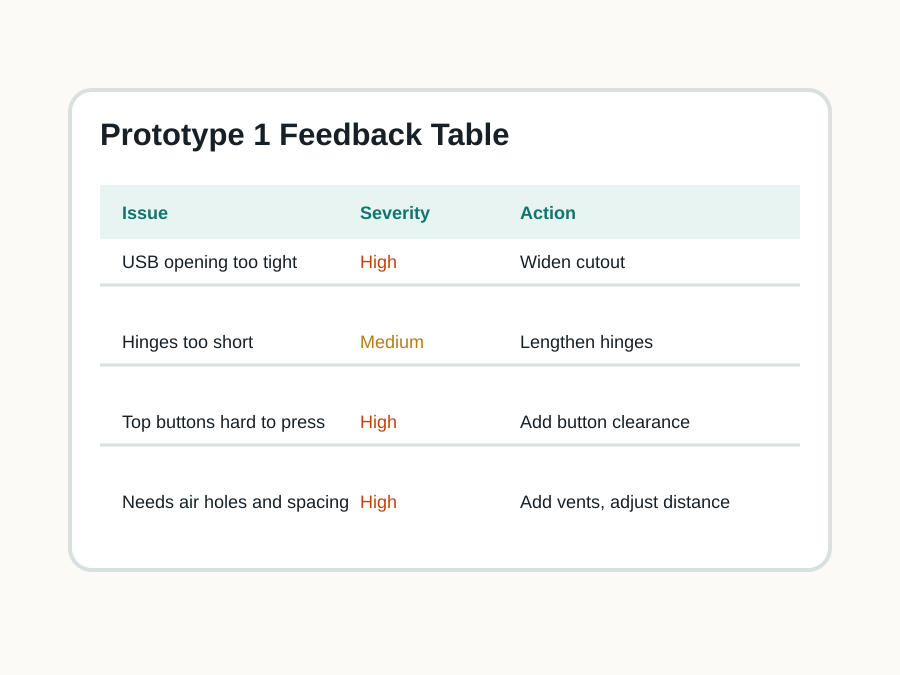
Prototype photos
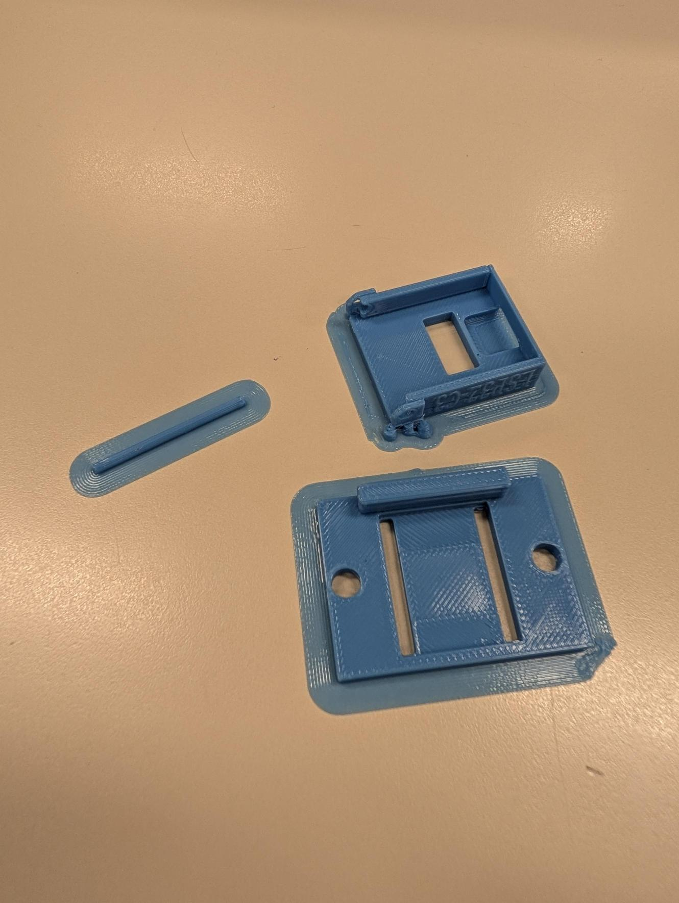
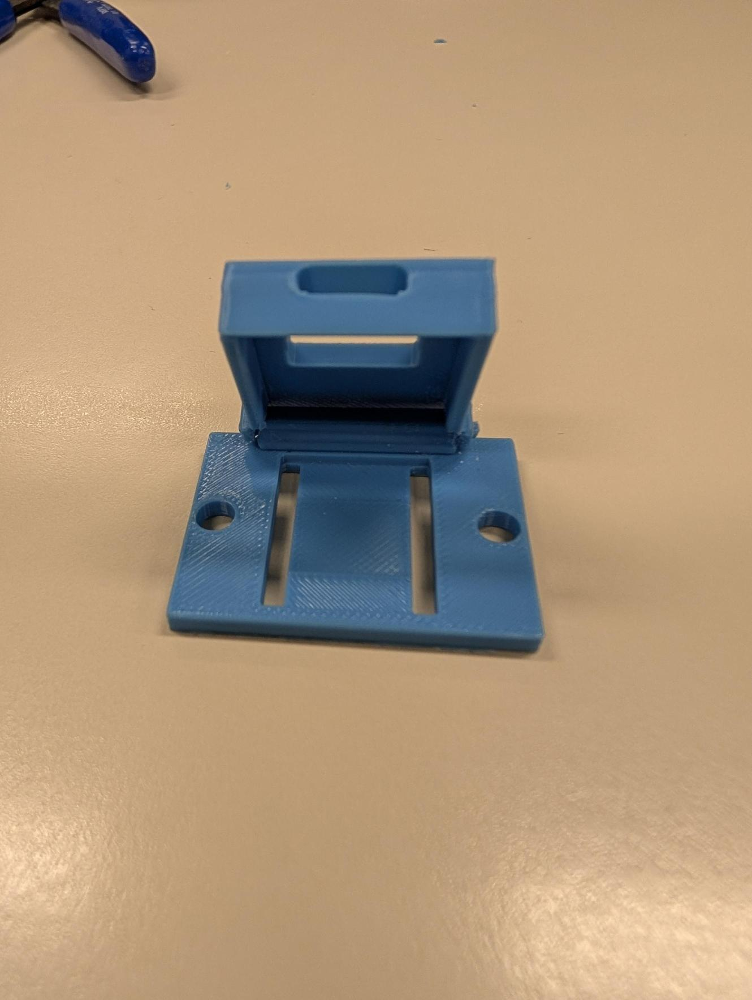
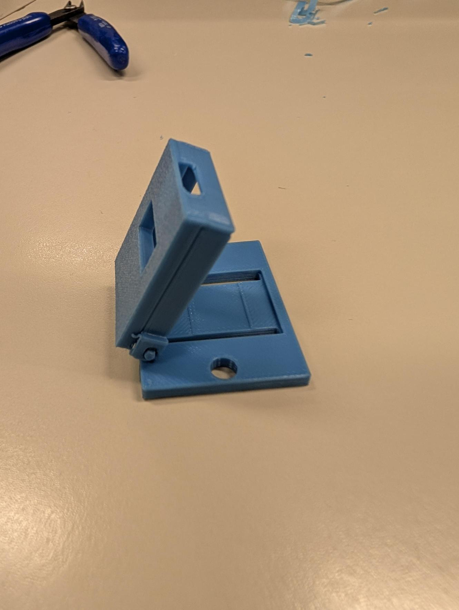
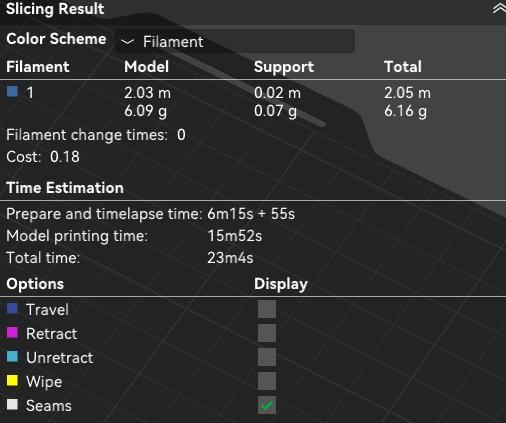
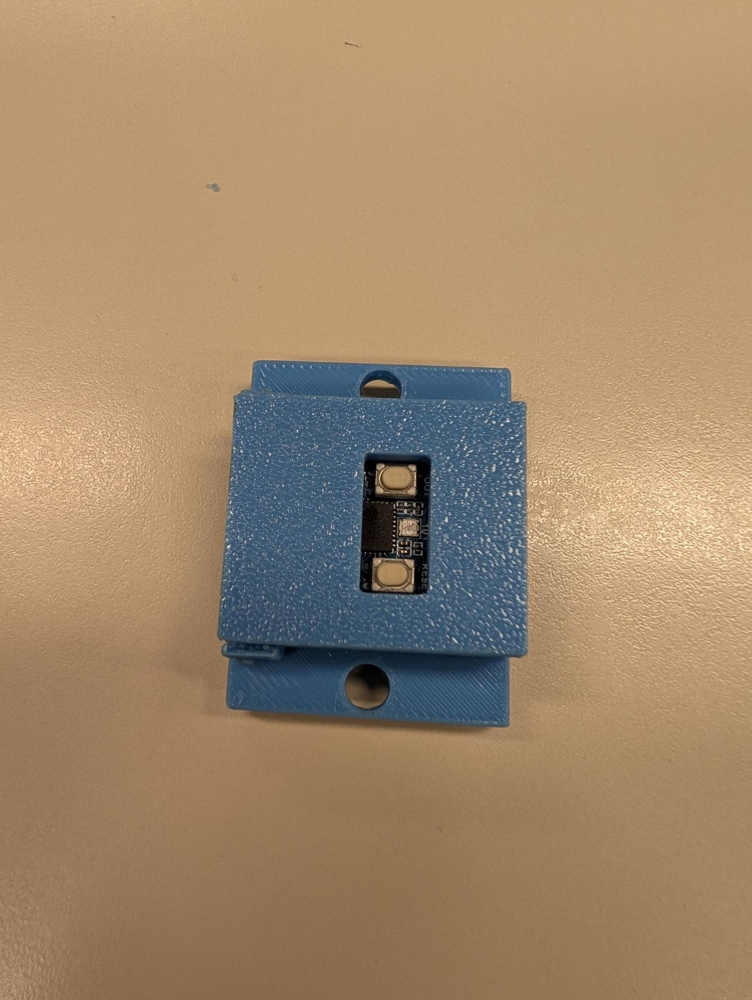
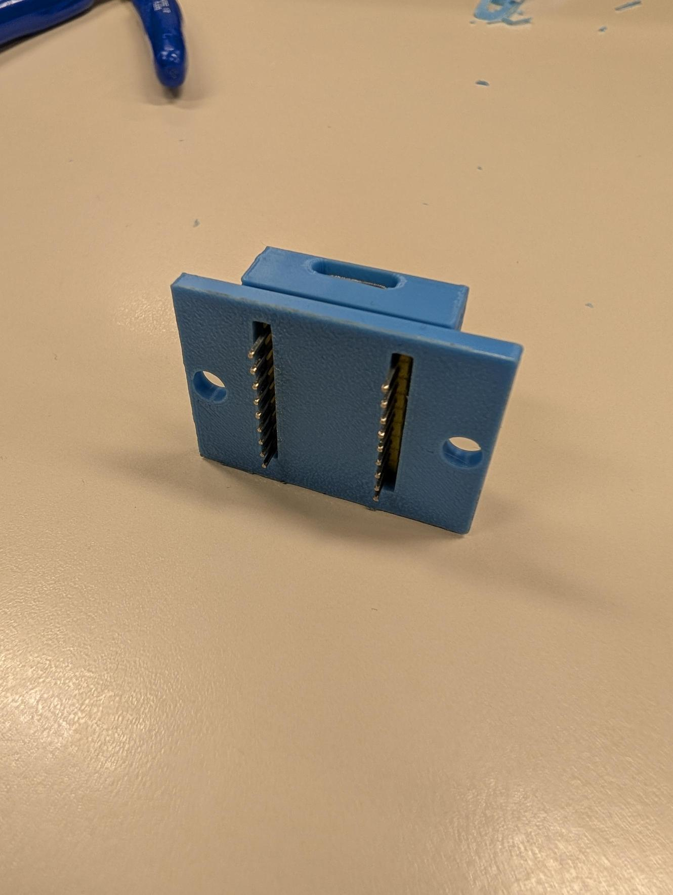
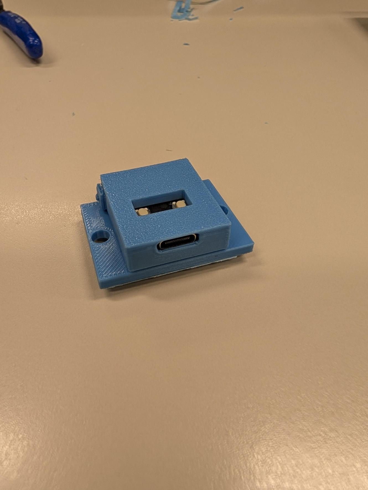
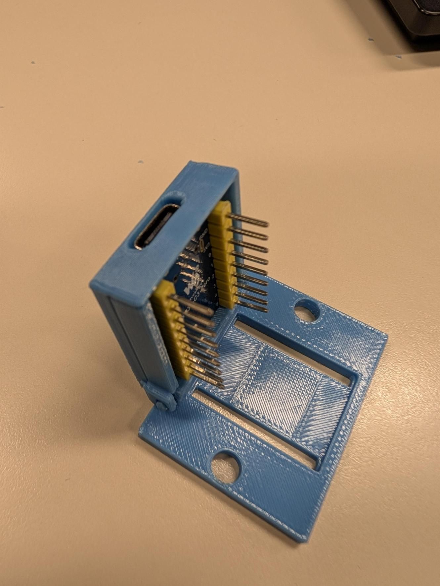
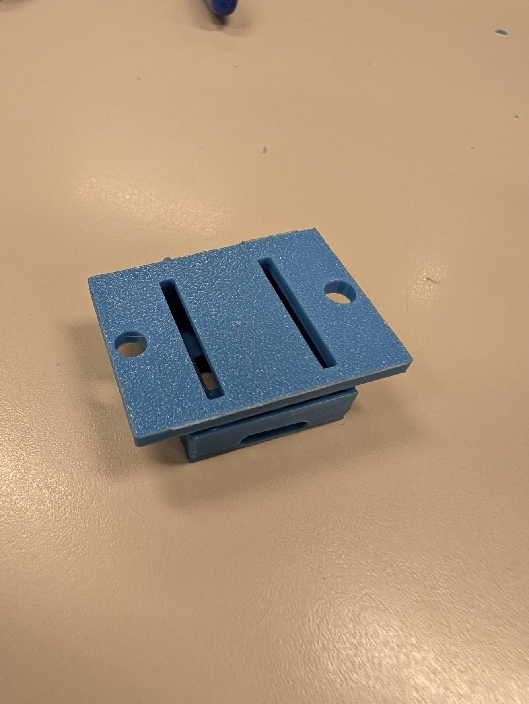
Next steps
Make the front opening larger so different USB-C cable ends fit without rubbing.
Remove more material around the pin rows so jumper wires and solder points have space.
Increase wall height slightly to hold the board more securely without covering components.
Lengthen the hinges and change the distance between parts so the prototype opens and fits correctly.
Add top button clearance and air holes so the buttons can be pressed and heat can escape.